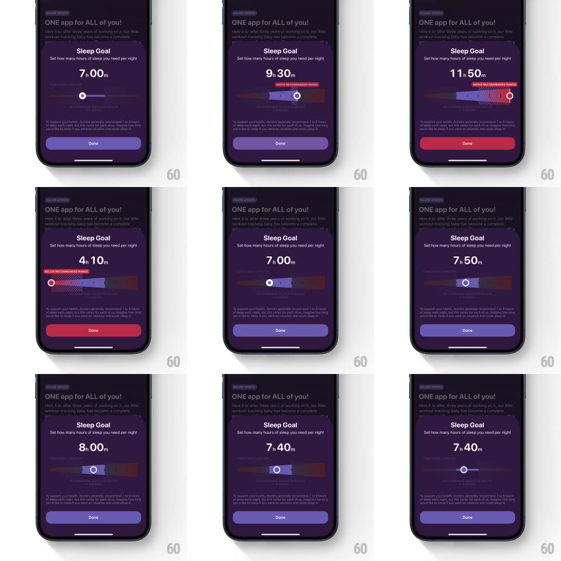

Media
Frame-by-frame

Rebuild this interaction 1:1: Gentler Streak's sleep goal slider - in the "Sleep Goal" sheet, dragging the slider changes the goal readout ("7h 00m" -> "10h 10m") while the track fill, the handle, and the Done button all interpolate color across a purple-to-red spectrum, and range banners ("ABOVE RECOMMENDED RANGE" / "BELOW RECOMMENDED RANGE") pop in at the extremes.

Rebuild this interaction 1:1: Gentler Streak's sleep goal slider - in the "Sleep Goal" sheet, dragging the slider changes the goal readout ("7h 00m" -> "10h 10m") while the track fill, the handle, and the Done button all interpolate color across a purple-to-red spectrum, and range banners ("ABOVE RECOMMENDED RANGE" / "BELOW RECOMMENDED RANGE") pop in at the extremes.
## Integration
Integration: stack-agnostic spec - springs given as stiffness/damping, timed motions as duration + curve; map every value to your framework and animation library of choice.
## Scene
Dark purple bottom sheet over a dimmed article: "Sleep Goal" title, subline, a large hour/minute readout, a horizontal slider with a white-ringed handle over a gradient track (purple left, red right), a range banner slot above the track, and a full-width Done button.
## Motion spec
Pattern: color-interpolated slider with threshold banners.
- Drag: the handle follows the finger 1:1; the readout updates continuously (minutes roll, ~80ms per step).
- Color: the track fill, handle ring glow, and Done button all tween through the same gradient - calm purple at low values, magenta mid, alert red at high values (continuous interpolation, no steps).
- Threshold banners: crossing into the high zone pops "ABOVE RECOMMENDED RANGE" (red pill label, scale 0.8 -> 1.05 -> 1, spring ~420/22, 220ms) above the track; crossing low pops "BELOW RECOMMENDED RANGE"; back inside the range, the banner fades out (200ms).
- Release: the handle settles with a small spring (spring ~440/28, 180ms); colors hold at the final value.
## Calibration
- Every colored element samples the same gradient at the same value - track, handle, and button never disagree.
- The color change is continuous during the drag - no snapping between presets.
## Reduced motion
Colors update on release only; banners fade without the scale pop.
## Don't miss
- The banners are signed - above and below are different states with different copy.
- The Done button participates in the color system - it is the largest color surface after the track.